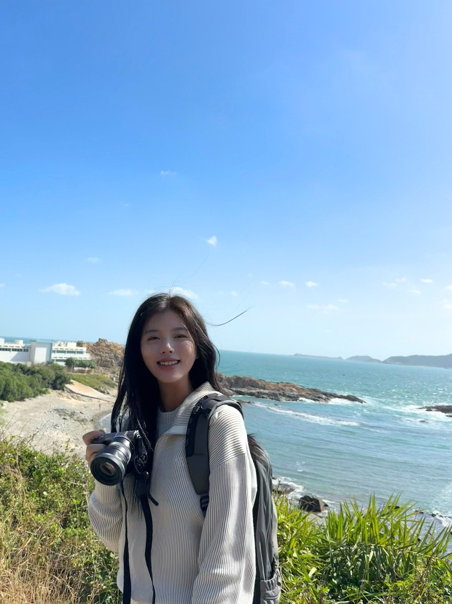

Evidence Before Advice
先看清学生条件，再设计可执行的升学路径
我们结合学生的学术表现、院校政策、家庭目标与长期发展，建立清晰、可执行、可持续复盘的升学方案。
数据展示基于既有服务与案例统计，具体申请结果受学生背景、年度政策、材料质量及正式服务协议影响。
统计口径：详细样本范围与统计周期待内部确认后补充公开说明。
Why Rain Education
真正有效的升学规划，始于准确判断，成于持续管理
我们把香港本地升学制度、GPA 管理、背景提升、导师辅导与家庭决策支持整合成一套长期升学战略，而不是只完成一次申请递交。
香港本地升学路径研究
理解副学士、高级文凭、本科直申、港八衔接与多地联申的真实门槛。
长期 GPA 管理
把课程选择、作业、考试、学术写作和阶段反馈纳入同一个管理节奏。
学术背景提升
围绕目标专业积累科研、竞赛、实习、阅读和文书素材，而非堆砌活动。
导师体系
按学科方向、申请阶段和学术短板匹配导师，与顾问方案同步推进。
家长沟通与决策支持
向家长讲清楚时间、风险、费用、选择和责任边界，减少重大决策焦虑。
全球名校申请策略
覆盖香港、英国 G5、新加坡、美国、澳洲、加拿大及全球 QS Top 100 路径。
Core Programmes
九个核心项目，覆盖从高考后到全球名校的完整升学周期
每个服务都先回答三件事：学生是否适合、核心风险在哪里、Rain Education 如何把方案落到可跟进的任务上。
港八副学士 2+2+1 名校跃升计划
- 适合学生
- 高考后、国际课程或成绩未达理想本科线的学生。
- 核心问题
- 如何用副学士阶段重新建立 GPA 与本科衔接机会。
- 解决方案
- 副学士申请、入学适应、选课策略、GPA 管理、本科转入节奏。
- 我们提供
- 背景诊断、院校梯度、材料管理、导师辅导与家长复盘。
港九大本硕连读精英规划计划
- 适合学生
- 希望把副学位、本科、实习与研究生升学连续规划的家庭。
- 核心问题
- 单次申请无法覆盖入学后 GPA、背景和下一阶段升学。
- 解决方案
- 建立本科入读、学术表现、背景提升、就业实习与研究生申请时间线。
- 我们提供
- 阶段规划、GPA 管理、背景提升、本科及研究生衔接、家长阶段复盘。
本计划以长期学术规划、过程管理和申请支持为核心，不构成任何院校录取承诺；具体服务与责任边界以正式协议为准。
咨询本硕路径香港本科申请
- 适合学生
- 高考生、DSE、A-Level、IB/AP 及其他国际课程学生。
- 核心问题
- 如何在专业选择、院校梯度、材料与面试之间建立更匹配学生背景的申请组合。
- 解决方案
- 本科直申、专业定位、文书材料、面试准备与多地联申。
- 我们提供
- 香港本科政策解读、时间线管理、材料审核与录取后安排。
香港研究生 / 硕士申请
- 适合学生
- 本科在读、本科毕业、低 GPA 或跨专业申请学生。
- 核心问题
- 背景分散、专业摇摆、材料缺乏清晰申请叙事。
- 解决方案
- 院校定位、专业匹配、简历、PS、推荐信、面试与补件跟进。
- 我们提供
- 香港、英国、新加坡及全球研究生方向联合规划。
英国 G5 申请
- 适合学生
- 目标牛津、剑桥、IC、UCL、LSE 及高竞争专业学生。
- 核心问题
- 不只是成绩，还需要学科深度、笔试、面试与学术表达。
- 解决方案
- 阅读清单、文书策略、MAT/STEP/TMUA 等笔试与模拟面试。
- 我们提供
- 牛剑/G5 导师匹配、学术论证训练与申请材料统筹。
新加坡申请
- 适合学生
- 目标 NUS、NTU 及亚洲高竞争本科、研究生项目的学生。
- 核心问题
- 新加坡方向重视专业匹配、学术能力与材料精准度。
- 解决方案
- 院校专业清单、文书策略、面试准备、香港/英国联申备选。
- 我们提供
- 跨地区时间线协调与录取后入学决策支持。
GPA 管理与背景提升
- 适合学生
- 副学士、本科在读、低 GPA、需要长期学术跟进的学生。
- 核心问题
- 成绩曲线、课程选择、薄弱科目和背景材料会共同影响申请。
- 解决方案
- 课程辅导、作业与论文节点、选课策略、科研/竞赛/实习规划。
- 我们提供
- 导师辅导、阶段复盘、家长沟通与下一阶段升学衔接。
国际名校申请规划
- 适合学生
- 希望同时比较香港、英国、新加坡、美国、澳洲、加拿大路径的学生。
- 核心问题
- 不同地区评估标准不同，容易出现材料重复、节奏混乱和定位失真。
- 解决方案
- 地区组合、院校梯度、专业定位、材料适配和申请时间线统筹。
- 我们提供
- 以学生长期目标为中心，建立多地申请组合与风险备选。
长期学业与职业发展规划
- 适合学生
- 希望把升学、GPA、实习、科研、职业方向与身份选择连续管理的家庭。
- 核心问题
- 只看下一次申请，容易忽视入学后的成绩表现和职业路径。
- 解决方案
- 年度目标、课程选择、能力建设、实习科研与下一阶段申请路线图。
- 我们提供
- 顾问、导师与家庭定期复盘，把短期申请放入长期成长框架。
What Happens Next
从第一次评估到 Offer 与入学，所有步骤都应可追踪
背景诊断
梳理成绩、语言、课程体系、专业兴趣、活动经历和家庭目标。
路径设计
判断本科直申、副学士衔接、GPA 补强、研究生或多地联申。
GPA 与学术能力管理
建立课程、作业、考试、阅读、科研和导师辅导的持续管理表。
文书与材料
统筹个人陈述、简历、推荐信、作品集、补充材料和申请证据。
申请与面试
管理递交、补件、面试、笔试、跟进和院校沟通节奏。
Offer 与入学规划
比较录取条件、专业路径、入学安排与下一阶段本科/研究生规划。
Success Cases
不只展示 Offer，更展示规划如何改变申请路径
以下案例均采用匿名方式呈现，重点是学生背景、挑战、规划策略与 Rain Education 的关键支持。
高考后转向香港副学士，再争取本科衔接
学生希望保留香港本科机会，但直接入读理想本科难度较高。
- 学生背景
- 高考后家庭希望重新设计香港升学方案。
- 挑战
- 需要兼顾入学可行性、后续 GPA 和本科转入时间线。
- 规划策略
- 副学士申请、选课建议、GPA 管理、本科转入材料提前准备。
- 阶段成果
- 已建立本科衔接所需的选课、GPA 管理与材料准备节奏，后续结果需以学生表现和当年政策为准。
- 关键支持
- 路径判断、学业管理、材料节奏与家长风险沟通。
港科大商业分析硕士申请
学生需要把商科、数据分析和职业动机整合成有说服力的申请故事。
- 学生背景
- 本科阶段具备商科与量化相关经历。
- 挑战
- 竞争激烈，需要证明量化能力与清晰职业路径。
- 规划策略
- 重构项目经历、文书逻辑、简历呈现与港校硕士时间线。
- 录取结果
- 获得 HKUST MSc Business Analytics admission offer。
- 关键支持
- 材料整合、专业定位和申请节奏管理。
英国本科心理学与教育方向录取
学生需要在 UCAS 材料中清晰呈现心理学兴趣、教育议题和学科准备。
- 学生背景
- 目标英国高竞争本科方向。
- 挑战
- 需要避免文书泛泛而谈，突出学术阅读和长期兴趣。
- 规划策略
- 专业定位、PS 结构优化、材料提交节奏管理。
- 录取结果
- 获得 UCL BSc Psychology with Education unconditional offer。
- 关键支持
- 文书论证、申请节点和多地策略协调。
低 GPA 学生的补强与院校梯度重构
学生不是只需要一篇文书，而是需要解释成绩风险并建立补强证据。
- 学生背景
- 本科成绩不占优势，希望申请香港/英国/新加坡研究生。
- 挑战
- 热门专业筛选严格，单一冲刺路径风险高。
- 规划策略
- GPA 诊断、选课建议、实习科研、推荐信和文书解释策略。
- 阶段成果
- 建立更合理的申请组合，降低单一路径失败风险。
- 关键支持
- 风险管理、材料重构和备选地区策略。
Parent Decision Center
关于香港升学，家长最常问的五个问题
副学士是不是正规路径？
香港副学士不是内地大专的简单等同概念，更适合作为本科衔接平台。能否转入理想本科取决于 GPA、专业匹配、材料和当年政策。
高考后还有没有香港名校机会？
仍需看成绩、英语能力、时间窗口和家庭目标。部分学生可考虑本科直申、副学士、高级文凭或多地联申。
GPA 低如何规划？
先判断低 GPA 的原因，再设计课程补强、背景证据、文书解释和院校梯度，避免只靠临时包装。
什么时候开始准备？
越早越能管理 GPA、语言、活动和专业方向；越晚开始，越需要聚焦关键材料和现实可行路径。
如何判断机构是否靠谱？
看是否能讲清楚学生条件、风险、时间线、交付物、服务边界和结果不确定性，而不是只承诺名校。
Trust Center
信任来自清晰边界，而不是夸张承诺
Rain Education 将咨询评估、服务内容、隐私处理、案例展示和结果边界写入流程，让家庭在每个阶段都知道依据、责任与下一步。
合规说明
服务内容、双方责任、费用与条款以正式协议为准。
隐私保护
成绩单、文书和个人信息仅用于评估与服务执行。
案例匿名化
公开案例移除姓名、申请编号、生日、邮箱、地址、学生 ID 和二维码。
结果边界
录取结果受学生背景、申请年份、材料质量和院校政策影响。
Mentor Team
由升学顾问与学科导师共同支持每一条升学路径
导师按学科、申请阶段与学生短板匹配，支持 GPA、笔试、面试、作品集、科研写作和长期学术规划。

AB
Alison Ballance
MFA, Goldsmiths University of London
具备 Goldsmiths University of London 艺术学习背景，支持作品集评估、个人陈述思路梳理与艺术院校面试准备。
- 服务模块：作品集、艺术写作、面试准备
BD
Bodan Ding
MSc, Imperial College London
支持 A-Level 数学、大学数学 GPA 管理与研究生申请规划。
- 服务模块：大学数学、GPA 管理、研究生申请
ML
Minting Luo
MSc Applied Artificial Intelligence, HKU
具备 HKU 应用人工智能学习背景，关注 AI 素养、教育科技与学生学术规划。
- 服务模块：AI 课程、STEM 学术规划、GPA 支持

QM
Qi Miao
HKUST 生物信息学方向
围绕生物信息学、环境工程与科研写作方向，支持理科学生进行课程规划、GPA 管理与学术沟通。
- 擅长：环境毒理、生物信息、科研写作、课程规划
- 辅导方向：副学士/本科 GPA 管理、理科升学与学术沟通
RR
Ruiyi Ren
BA, The University of Hong Kong
具备 The University of Hong Kong 经济与中文背景，支持商科、人文学科申请与跨文化沟通表达。
- 服务模块：商科写作、人文学科、副学士支持
XS
Xiaoyu Sun
BSc Physics, Imperial College London
具备 Imperial College London 物理学习背景，支持物理、数学、科研规划与 G5/HK 院校申请准备。
- 擅长：物理、数学分析、机器学习、计算物理
- 辅导方向：A-Level Physics、G5 申请、科研与 GPA 规划
WW
Wenhuai Wu
PhD Mathematics, University of Cambridge
具备 University of Cambridge 数学方向背景，支持牛剑数学申请、笔试训练、面试准备与个人陈述梳理。
- 服务模块：牛剑数学申请、笔试训练、面试准备

OZ
Olivia Zhang
Yale University 教育研究方向
具备 Yale University 教育研究背景，关注学生流动、跨地区申请与长期升学路径规划。
- 服务模块：本科规划、硕博申请、全球升学策略

SC
Sophia Chen
M.Ed. Higher Education, UCLA
具备 UCLA 高等教育方向背景，支持副学士衔接、GPA 恢复、项目选择与跨地区升学规划。
- 擅长：副学士升本科、GPA 恢复、课程规划、家庭咨询沟通
- 辅导方向：香港本科衔接、研究生申请、跨地区升学路径规划
Testimonials
真实服务反馈经授权匿名呈现
以下反馈需完成来源与授权核验后展示。
FAQ
常见问题
副学士是否等于内地大专？
不是同一套体系。香港副学士更适合作为本科衔接平台，但能否转入理想本科取决于 GPA、专业匹配、材料和当年招生政策。
港九大本硕连读精英规划计划是否承诺录取？
本计划以长期学术规划、过程管理和申请支持为核心，不构成任何院校录取承诺；具体服务与责任边界以正式协议为准。
高考后多久开始准备香港路径？
建议越早越好。时间越充足，越能管理英语、GPA、专业选择和本科衔接；时间越紧，越需要聚焦可行路径。
GPA 低还能申请香港或海外硕士吗？
需要先看低 GPA 的原因、专业匹配、课程难度、背景材料和目标院校梯度，再判断补强方案。
英国 G5 申请是否只看成绩？
成绩是基础，但高竞争方向还重视学科深度、阅读、笔试、面试、文书论证和推荐信。
可以同步申请香港、英国和新加坡吗？
可以，但需要统筹时间线、材料差异、申请费用和备选逻辑，避免多地申请变成材料混乱。
导师辅导和顾问服务如何配合？
顾问负责路径设计、申请节奏和家庭沟通；导师围绕学科、GPA、笔试、面试和作品集提供专项支持。
提交表单后会如何跟进？
Rain Education 顾问会根据学生年级、成绩、目标地区和当前问题进行初步判断，并通过电话、WhatsApp、微信或邮件联系。
Enquire Today
提交学生基本情况，获取初步升学评估
可通过表单、微信、WhatsApp、电话或邮箱联系。学生资料仅用于咨询评估与服务沟通。